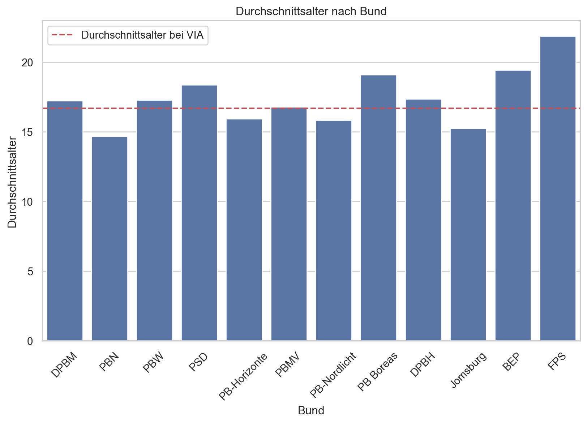

| Bundename | Männliche Personen | Weibliche Personen | Gesamtanzahl | |
|---|---|---|---|---|
| 0 | DPBM | 1320 | 1080 | 2400 |
| 1 | PBN | 310 | 869 | 1179 |
| 2 | PBW | 571 | 473 | 1044 |
| 3 | PSD | 286 | 260 | 546 |
| 4 | PB-Horizonte | 302 | 199 | 501 |
| 5 | PBMV | 205 | 211 | 416 |
| 6 | PB-Nordlicht | 50 | 272 | 322 |
| 7 | PB Boreas | 158 | 135 | 293 |
| 8 | DPBH | 168 | 82 | 250 |
| 9 | Jomsburg | 123 | 84 | 207 |
| 10 | BEP | 65 | 46 | 111 |
| 11 | FPS | 39 | 34 | 73 |
Analyse der DPV Mitgliederzahlen 24 and der Teilnehmenden Zahlen von VIA24
Die Offizellen Meldezahlen aus dem Jahr 24 wurden als aggregierte Daten verwendet. Bei VIA24 wurden aggregierte Daten aus dem Anmelde-Tool verwendet. Die Daten aus dem Anmelde-Tool können Fehlerhaft sein, wenn die Daten inkorrekt eingetragen wurden.
DPV Meldezahlen
Liste mit Daten
Diagramm mit DPV-Mitgliederzahlen
Laut den gemeldeten Mitgliedern ist der DPBM dominierend.
List mit Anzahl der Stämme von allen Bünden
Achtung: hier können auch inaktive Stämme enthalten sein bzw. es kann sein, dass neue Stämme noch nicht vorhanden sind.
| Bundename | Anzahl Stämme | |
|---|---|---|
| 0 | DPBM | 46 |
| 1 | PBW | 39 |
| 2 | PBN | 19 |
| 3 | DPBH | 13 |
| 4 | PB Boreas | 10 |
| 5 | PB-Nordlicht | 7 |
| 6 | PBMV | 6 |
| 7 | PSD | 6 |
| 8 | FPS | 4 |
| 9 | PB-Horizonte | 4 |
| 10 | BEP | 3 |
| 11 | Jomsburg | 3 |
Diagramm mit Stammesdurchschnittsgröße
PBW, DPBH und FPS haben sehr kleine Stämme. Das scheint nicht gesund zu sein.
Diagramm mit Geschlechterverteilung
Ein Faktor von 0 bedeutet 100% weiblich und 1 bedeutet 100% männlich. 0,5 ist damit eine parität.
PBN und PBNL haben einen starkes weibliches Übergewicht, während der DPBH viele männliche Personen hat.
VIA Anmelde-Tool Daten
Liste mit Teilnehmenden nach Bund
Gesamtteilnahmezahl an VIA 3122| Bunesname | Teilnehmer VIA24 | |
|---|---|---|
| 0 | DPBM | 952 |
| 1 | PBN | 910 |
| 2 | PBW | 204 |
| 3 | PSD | 140 |
| 4 | PB-Horizonte | 98 |
| 5 | PBMV | 93 |
| 6 | PB-Nordlicht | 201 |
| 7 | PB Boreas | 215 |
| 8 | DPBH | 129 |
| 9 | Jomsburg | 29 |
| 10 | BEP | 33 |
| 11 | FPS | 24 |
Diagramm mit Teilnehmenden nach Bund
DPBM und PBN haben deutlich mehr als die Hälfte aller Teilnehmenden gestellt.
Aktivierung der Teilnehmenden je Bund
Wenn alle Bünde ihre Teilnehmenden ähnlichstarkt wie PBN, PBNL und Boreas hätten aktivieren können, wären wir auf dem Lager über 5000 Personen gewesen.
Diagramm von Aktivierten Stämmen je Bund
Ingesamt waren viele Stämme des DPVs auf dem Lager Aktiv. Der PBW, der PBMV und Jomsburg hatten allerdings mehr Stämme nicht auf dem Lager als da waren. Da scheit es ein struktuelles Problem zu geben.
Durschnittalter auf VIA24 je Bund

Verteilung der Altersstruktur je Stamm
Das Durschschnittsalter ist in allen Bünden sehr ähnlich. Die Verteilung der Alter allderings nicht. Der Median auf dem Lager war 15 Jahre. Also gab es genausoviel 7-14 wie 15-80 jährige. Es fällt auf, dass der PBW und Boreas recht alt sind im Vergleich zu den anderen Bünden.
Diagramm der Geschlechterverteilung
Das durschnittliche Geschlechterverhältnis bei VIA ist 0.44
Der PBN und der PBNL fallen klar aus dem Muster. Diese beiden Stämme scheinen einen große weibliche dominanz zu haben. Diese beiden Stämme ziehen auch den Durschnitt in Richtung weibliche Dominanz. Die Werte unterscheiden sich nicht stark von der Mitgliedermeldungen.
Diagramm mit Geschlechterverteilungen je Stamm
Geschmichte Stämme scheinen eher Männer dominiert zu sein, während die reinen Frauenstämme oft sehr groß sind.
Diagramm mit Altersverteilung je Stamm
Es scheint so, dass nicht alle Stämme die Wölflinge mitgenommen haben. Sonst lässt es sich nur schwer erklären warum beim Mosaik z.B. bei 17-18 ein Häufung zu erkennen ist.
Fazit
DPBM
Mit Abstand größter Bund nach gemeldeten Zahlen. Auch die meisten Stämme. Durchschnittliche Aktivierungsquote.
PBN
Wachener Bund, starkes übergewicht von Mädchen. Herausragende Aktivierungsquote. Sehr Junges durchschnittsalter.
PBW
…